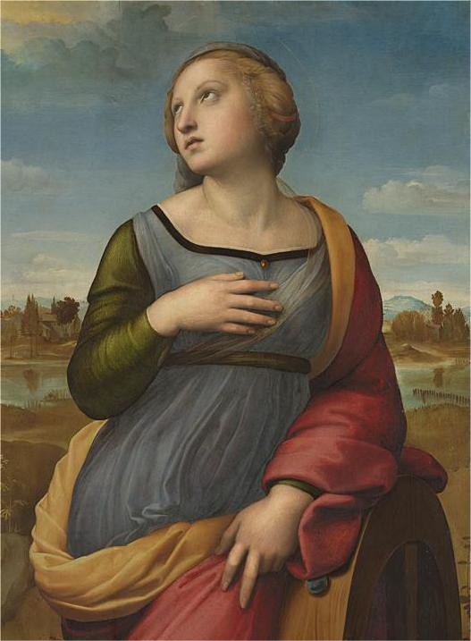

This art technique was originally derived by sfumato and was developed by Italian artist Raphael. Like sfumato, Unione utilizes soft gradients to transition light from dark to produce a dramatic and melancholic tone or scene. However, Unione focuses on maintaining the vibrancy, color saturation, and luminosity while maintaining the “smoky sfumato” effect as sfumato paintings were commonly desaturated (or greyish) in color. Example: Saint Catherine of Alexandria by Raphael.
